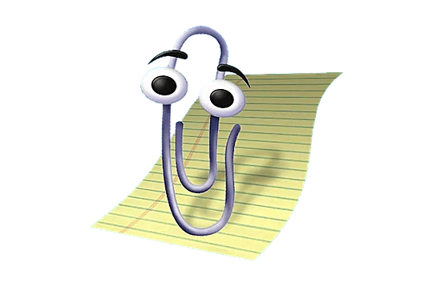

Двенадцать лет держал инфраструктуру живой: десятки серверов, десять тысяч хостов, uptime 99,5%. Последние два года делаю то же самое, но вместо сервисов у меня модели, а вместо SLA принцип fail-closed.
| Сейчас нужно | Чем закрываю |
|---|---|
| ИИ-интеграции в продукт | Мультимодальные LLM: текст, изображения, голос. Цепочки фолбэков, стриминг, схемы ответов |
| Чтобы ИИ не врал | fail-closed: не подтвердилось из первоисточника, значит не показываю. Провенанс по каждому полю |
| Автоматизация рутины | Telethon, кроны, метрики, алерты, Zabbix, дедуп потоков |
| Свои серверы, не SaaS | VPS, systemd, nginx, бэкапы, Docker, CI/CD. Всё живёт без меня неделями |
| Проверка ИИ-кода | Vitest, Playwright, приёмка по чек-листу вместо «ну вроде работает» |
| Бот, с которым не переписываются, а работают | СПРУТ-бот: текст и голос, /today /weekend, mini app внутри. Дальше MAX |
| Приложение в сторе, а не «ещё один сайт» | Программа 21 в RuStore: PWA + Capacitor, офлайн, шифрование на устройстве |
| 1 | Разбираю задачу, а не техзадание. Сначала выясняю, что должно измениться в бизнесе, и только потом выбираю инструменты. Иногда честный ответ: чинить нечего, надо менять процесс. |
| 2 | Показываю прототип до кода. Спорить о продукте дешевле на демо, чем после сдачи. У Пяти Углов так и вышло: сначала работающее демо, потом разговор о бюджете. |
| 3 | Фиксирую объём, этапы и цену. Приёмка по чек-листу, а не «вроде работает». С LeChill был договор, техзадание и график работ. |
| 4 | Отдаю насовсем. Доступы, документация, админка, бэкапы. Вы меняете контент и цены сами, я не нужен для каждой запятой. |

Windows
Произошла ошибка 0E: VIBE_CODER_NOT_FOUND
Возможно, вы искали исполнителя, который «сделает за 5 тысяч к утру».
Нажмите любую клавишу, чтобы вернуться к работающей системе.
* Нажмите в любом месте, чтобы продолжить